這趟的節奏
這版不再把重點放在老街，而是直接選「統一渡假村－谷關溫泉養生會館」當主場。下午進飯店、傍晚拍山景與園區照片、晚上泡湯，隔天慢早餐和園區設施，全程不爬山、不走步道。
給麗麗公主的邀請
這趟不走趕路行程。大頭負責路線、時間、交通跟泡湯安排；麗麗公主只要負責慢慢走、挑照片、吃喜歡的小點心，然後把今天過得開心。
不排滿
每半天只抓一個主活動，留時間給喝咖啡、休息、換衣服、補妝。
不爆走
不排步道、不爬山。要走的路都在園區內，剩下交給車程、房內湯泉和晚餐。
不催促
喜歡的景就多停一下；如果照片拍不好，大頭重拍到公主滿意。
不冒險
天氣不好就啟用雨天備案，不勉強走吊橋或山路。
住這間：統一渡假村谷關溫泉養生會館
這次直接選度假村型住宿。主推和洋客房：房內可泡湯，整體有山林、溪景與園區設施，比單純溫泉飯店更適合第一次過夜約會。
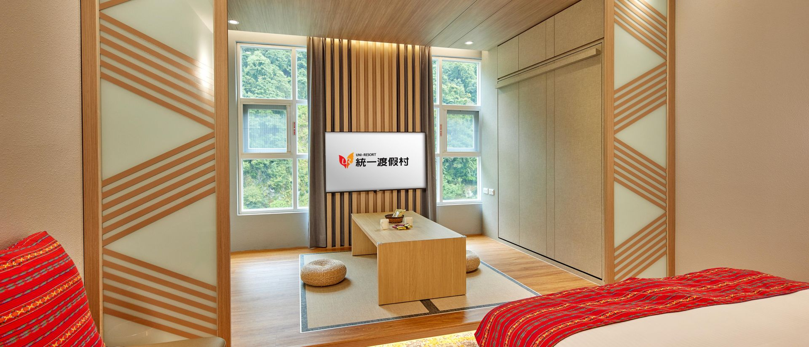
大頭直接訂這個
和洋客房，想加碼就升森活閣樓
官網客房介紹主打「沉浸房內湯泉、擁抱山林入眠」，並列出和洋客房、森活閣樓、賽德克套房。第一次約會先選和洋客房最穩；若想更有度假感，再升森活閣樓。
房內湯泉
山林溪景
園區設施
照片來源：統一渡假村谷關館官網
它是完整渡假村，不只是住一晚泡湯；客房、餐飲、溫泉和室內設施都在同一個園區，第一次約會不用一直換點。
「我要谷關館兩人入住，優先和洋客房；如果有溪景或更安靜的位置請幫我安排，也想確認房內泡湯與早餐。」
如果要更有驚喜感，就問森活閣樓是否有房。它比一般房型更像度假村體驗，適合做第一次旅行記憶點。
官網提醒響應環保政策不提供一次性備品；牙刷、牙膏、梳子、刮鬍刀自己帶，先替麗麗公主準備好。
兩天一夜行程
時間可以照住宿入住時間微調。原則是第一天進度假村、第二天慢慢退房；任何時刻都不爬山、不走遠路，避免麗麗公主累到不想說話。
Day 1｜抵達統一渡假村，房內湯泉與晚餐
建議 10:00 從台中出發10:00
台中出發，路上先買水跟點心
自駕走台 8 線進谷關，車程抓 1.5 到 2 小時。搭公車就以 850 台中到谷關為主，出門前再查即時班次。
車上歌單先準備
不要空腹進山
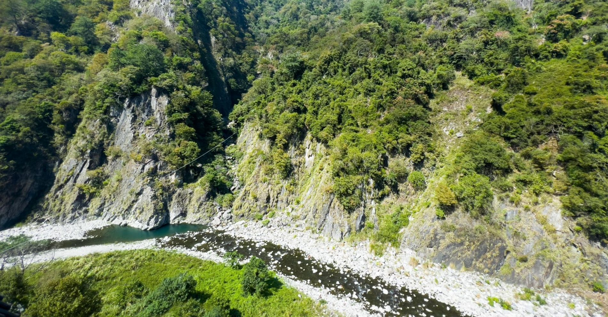
12:00
谷關路上午餐，先吃熱的
不用追名店，挑順路、能坐下聊天的熱食就好。第一餐重點是把一路上的尷尬先聊開，吃完直接往渡假村。
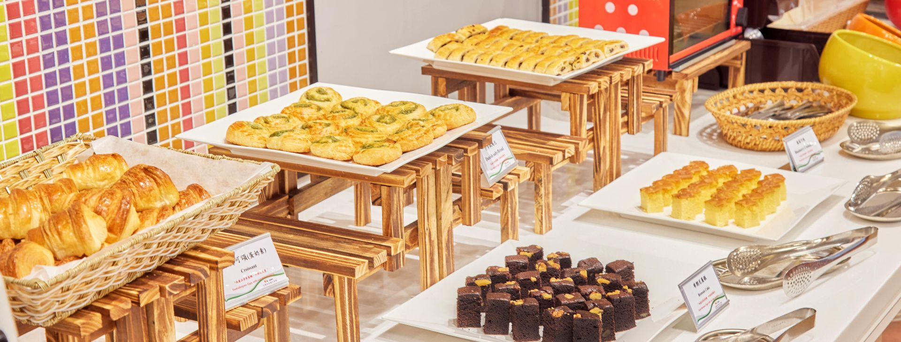
13:30
先到度假村附近，拍第一張山景照
不急著跑景點。到谷關後先在大甲溪與山景附近停一下，拍一張「我們到了」的照片，再進飯店辦入住。
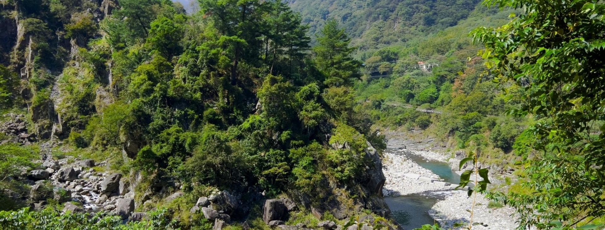
15:00
入住統一渡假村，先回房間休息
訂和洋客房，想加碼就升森活閣樓。進房放行李、確認泡湯與晚餐時間，讓麗麗公主有整理自己的時間。
16:30
園區拍照，房間和山景就夠了
不特別跑老街。先拍房間、窗景、園區和山景，光線好就拍麗麗公主的側面照和兩人背影照，整段腳程抓 15 分鐘以內。
- 大頭先把點位踩好，麗麗公主到場直接擺位，不來回走。
- 拍照口訣：站窗邊、身體微側、背景留山景或湯泉光線。
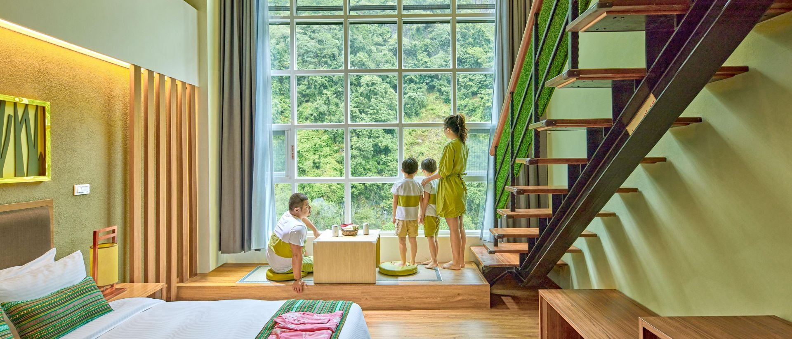
18:30
松饕中餐廳晚餐
晚餐留在渡假村內最穩，不用開車找店。吃飽但不要太撐，泡湯前酒不要多，讓晚上節奏舒服。
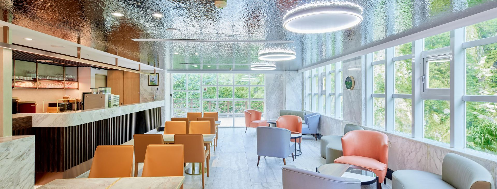
20:00
房內湯泉或原湯泡湯
官網主打房內湯泉，也有山谷旁的露天原湯。泡湯前先補水，泡 10 到 15 分鐘就休息一下，舒服比逞強重要。
毛巾多帶一條
泡後喝水
保暖外套放手邊
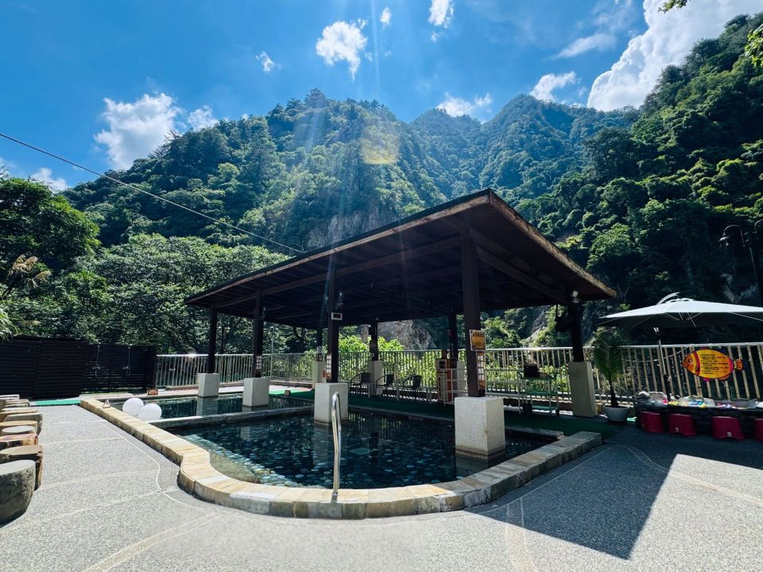
21:30
夜間園區小散步，10 分鐘就好
只走渡假村裡好走的一小段，來回大概 10 分鐘。聊一個輕鬆題目：今天最喜歡的一個畫面是什麼。
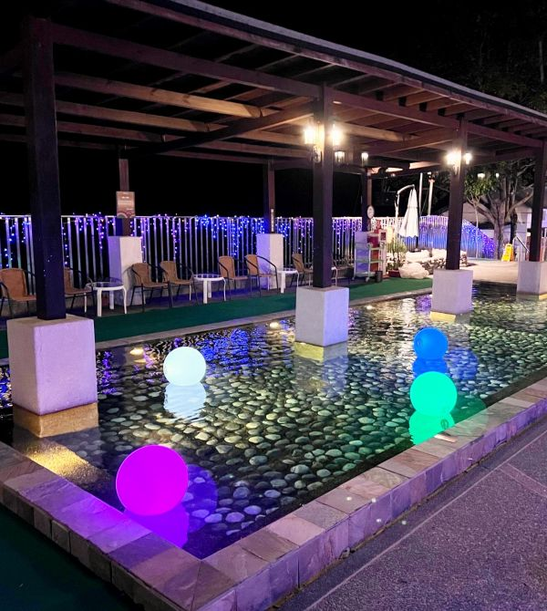
Day 2｜慢早餐、室內設施與回程
舒服版，不走遠路09:00
慢早餐，不趕退房
飯店早餐慢慢吃，順便看一下天氣。退房前把行李先整理好，晚一點要去哪都不用慌。
10:30
FUN玩室內或再泡一輪湯
第二天不用排外面景點。看麗麗公主狀態，想動就去室內設施，想安靜就回房內泡湯或去原湯。
- 先問公主想動還是想休息，不替她硬安排。
- 想泡湯就補水、不要泡太久。
- 想拍照就挑室內光線好的角落，少走一點。
室內設施
再泡一輪
少走路
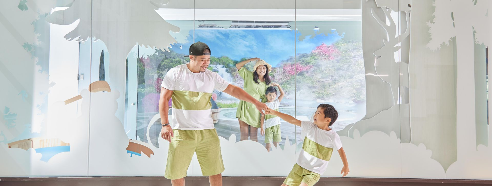
12:30
午餐，挑可以坐久一點的店
不要馬上趕路。能在渡假村內吃就留在裡面，或回谷關街上挑能慢慢坐的店，不要邊趕路邊吃。
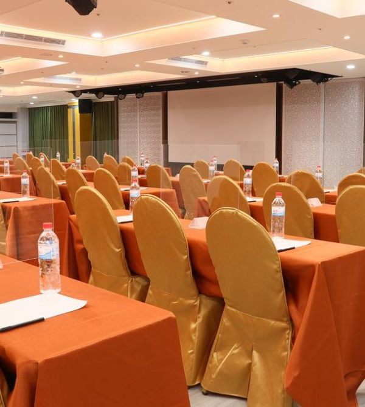
14:00
開車兜風＋老街伴手禮
不下車走遠路。沿台 8 線開一小段看溪谷風景，回頭在老街停一次，買白冷冰棒、小點心當伴手，順手拍最後一組合照。
15:30
回程，不拖到太累
自駕建議天黑前下山，回程車上鋪好枕頭讓公主補眠。搭公車請提早查 850 返程班次，寧願早一班，也不要讓最後的印象變成等車焦慮。
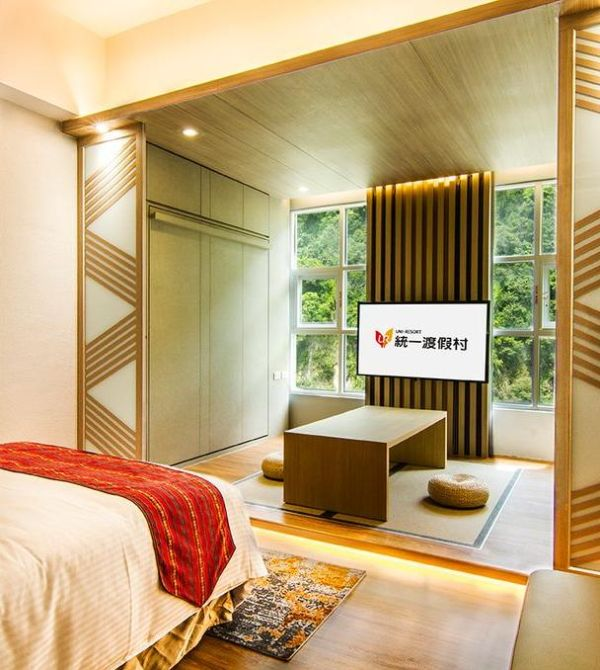
三個備案
出遊最重要的是氣氛，不是照表操課。遇到雨、人多、或麗麗公主想躺平，就直接切備案。
雨天版
取消老街伴手禮，整天留在渡假村。照片改拍房間窗邊、湯泉、餐廳和室內設施。
躺平版
第二天連兜風都取消。慢早餐→房內泡湯→整理行李→直接回程，全程不下車超過 5 分鐘。
加碼度假村版
兩個人都很放鬆，就升森活閣樓或改成豪華露營方案，把這趟做成真正的度假村旅行。
大頭出發前檢查
這份清單比行程更重要。準備好，麗麗公主就能一路放鬆。
- 線上或電話訂「統一渡假村－谷關溫泉養生會館」，優先和洋客房；想加碼就問森活閣樓。
- 訂房後確認入住時間、早餐、房內泡湯、原湯開放狀態和園區設施時間表。
- 官網提醒響應環保政策不提供一次性備品，牙刷、牙膏、梳子、刮鬍刀要自己準備。
- 出發前一天查天氣、台 8 線路況、公車 850 班次。
- 帶薄外套、雨傘、行動電源、濕紙巾、OK 繃、腸胃藥、保溫瓶；鞋子挑軟底好穿脫，不需要登山鞋。
- 車上準備不吵的歌單，音量比平常小一點，讓聊天容易發生。
- 拍照前先問：「這裡光很漂亮，要不要我幫妳拍幾張？」不要硬拍。
- 回程前問麗麗公主想帶什麼，不要急著把伴手禮跳過。
資料與出發前確認
資料整理於 2026-06-24。營業、開放、交通班次會變，出發前請再點官方連結確認一次。